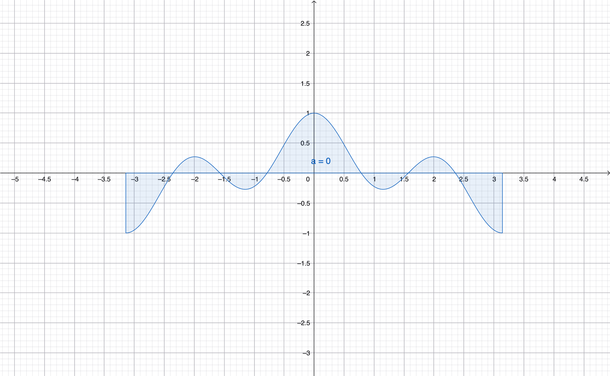

MIT 18.06 Lecture 24: Markov Matrices and Fourier Series
This lecture explores two important applications of eigenvalues and eigenvectors: Markov matrices for modeling state transitions, and Fourier series for decomposing functions into orthogonal components.
Markov Matrices
A Markov matrix is a special type of matrix that describes state transitions in a probabilistic system.
Example:
\[ A = \begin{bmatrix}0.2 & 0.01 & 0.3 \\ 0.7 & 0.99 & 0.3 \\ 0.1 & 0 & 0.4\end{bmatrix} \]
Two Key Properties
- All entries ≥ 0: Every element represents a probability
- All columns sum to 1: Each column represents a complete probability distribution
These properties ensure that if we start with a probability distribution (a vector whose entries sum to 1), applying the Markov matrix preserves this property.
Steady State
The steady state is given by \(c_1 x_1\), where \(x_1\) is the eigenvector corresponding to eigenvalue \(\lambda = 1\).
Important property: \(x_1 \geq 0\) (all entries are non-negative), which makes sense for a probability distribution.
Why λ = 1 is Always an Eigenvalue
Proof: We need to show that \(A - I\) is singular.
\[ A - I = \begin{bmatrix}-0.8 & 0.01 & 0.3 \\ 0.7 & -0.01 & 0.3 \\ 0.1 & 0 & -0.6\end{bmatrix} \]
Observe that \(\text{row}_1 + \text{row}_2 + \text{row}_3 = \mathbf{0}\), which means:
\[ \text{row}_1 + \text{row}_2 = -\text{row}_3 \]
The rows are linearly dependent because \((1, 1, 1)\) is in the left null space \(N(A^{\top})\).
Key insight: \((1, 1, 1)\) is an eigenvector of \(A^{\top}\) with eigenvalue 1. Since Markov matrices and their transposes share eigenvalues, \(\lambda = 1\) is also an eigenvalue of \(A\).
Finding the Eigenvector \(x_1\)
From the eigenvalue equation:
\[ Ax = \lambda x \]
\[ Ax - \lambda x = (A - \lambda I)x = 0 \]
We can find \(x_1\) by solving \((A - I)x = \mathbf{0}\).
Application: Population Migration
Example: California and Massachusetts
We model population movement between California and Massachusetts using a Markov matrix:
\[ \begin{bmatrix}u_{\text{cal}} \\ u_{\text{mass}}\end{bmatrix}_{t=k+1} = \begin{bmatrix}0.9 & 0.2 \\ 0.1 & 0.8\end{bmatrix} \begin{bmatrix}u_{\text{cal}} \\ u_{\text{mass}}\end{bmatrix}_{t=k} \]
Reading the transition matrix: - 90% of people in California stay, 10% move to Massachusetts - 80% of people in Massachusetts stay, 20% move to California
Evolution Over Time
Initial state: All 1000 people in Massachusetts
\[ \begin{bmatrix}u_{\text{cal}} \\ u_{\text{mass}}\end{bmatrix}_{t=0} = \begin{bmatrix}0 \\ 1000\end{bmatrix} \]
After 1 time step:
\[ \begin{bmatrix}u_{\text{cal}} \\ u_{\text{mass}}\end{bmatrix}_{t=1} = \begin{bmatrix}200 \\ 800\end{bmatrix} \]
After 2 time steps:
\[ \begin{bmatrix}u_{\text{cal}} \\ u_{\text{mass}}\end{bmatrix}_{t=2} = \begin{bmatrix}340 \\ 660\end{bmatrix} \]
Observation: The total population remains 1000 at every step, confirming conservation of probability.
Finding the Steady State
Eigenvalues:
\[ \lambda_1 = 1, \quad \lambda_2 = 0.7 \]
Eigenvector 1 (for \(\lambda_1 = 1\)):
\[ \left(\begin{bmatrix}0.9 & 0.2 \\ 0.1 & 0.8\end{bmatrix} - I\right)x_1 = \begin{bmatrix}-0.1 & 0.2 \\ 0.1 & -0.2\end{bmatrix}x_1 = 0 \]
\[ x_1 = \begin{bmatrix}2 \\ 1\end{bmatrix} \]
Interpretation: The steady state has \(\frac{2}{3}\) of people in California and \(\frac{1}{3}\) in Massachusetts. Once this state is reached, the number of people moving into California equals the number moving out, maintaining equilibrium.
Eigenvector 2 (for \(\lambda_2 = 0.7\)):
\[ \left(\begin{bmatrix}0.9 & 0.2 \\ 0.1 & 0.8\end{bmatrix} - 0.7I\right)x_2 = \begin{bmatrix}0.2 & 0.2 \\ 0.1 & 0.1\end{bmatrix}x_2 = 0 \]
\[ x_2 = \begin{bmatrix}-1 \\ 1\end{bmatrix} \]
General Formula
The population at time \(k\) is:
\[ u_k = c_1 \begin{bmatrix}2 \\ 1\end{bmatrix} + c_2 (0.7)^k \begin{bmatrix}-1 \\ 1\end{bmatrix} \]
As \(k \to \infty\), the term \((0.7)^k \to 0\), leaving only the steady state:
\[ u_{\infty} = c_1 \begin{bmatrix}2 \\ 1\end{bmatrix} \]
Projection onto Orthonormal Basis
Any vector \(v\) can be projected onto an orthonormal basis \(\{q_1, q_2, \ldots, q_n\}\) (where each \(q_i\) has unit length and is perpendicular to all others):
\[ v = x_1 q_1 + x_2 q_2 + \cdots + x_n q_n \]
Finding the Coefficients
To find \(x_1\), take the inner product with \(q_1\):
\[ q_1^{\top} v = x_1 q_1^{\top} q_1 + x_2 q_2^{\top} q_1 + \cdots + x_n q_n^{\top} q_1 \]
Since the basis is orthonormal: - \(q_i^{\top} q_j = 0\) for \(i \neq j\) (orthogonality) - \(q_i^{\top} q_i = 1\) (unit length)
This leaves:
\[ q_1^{\top} v = x_1 \]
Note: If the basis is only orthogonal (not normalized), we would have \(q_1^{\top} v = x_1 \|q_1\|^2\), requiring:
\[ x_1 = \frac{q_1^{\top} v}{q_1^{\top} q_1} \]
Matrix Form
Writing this for all coefficients with an orthonormal basis:
\[ \begin{bmatrix}| & \cdots & | \\ q_1 & \cdots & q_n \\ | & \cdots & |\end{bmatrix} \begin{bmatrix}x_1 \\ \vdots \\ x_n\end{bmatrix} = v \]
\[ Qx = v \]
For an orthonormal matrix (columns are orthonormal vectors), \(Q^{-1} = Q^{\top}\), so:
\[ x = Q^{\top} v \]
This shows that finding coefficients in an orthonormal basis is computationally simple—just take inner products with each basis vector.
Fourier Series
Fourier series extends the idea of orthogonal decomposition to functions:
\[ f(x) = a_0 + a_1 \cos x + b_1 \sin x + a_2 \cos 2x + b_2 \sin 2x + \cdots \]
Orthogonal Functions
Two functions \(f(x)\) and \(g(x)\) are orthogonal on an interval \([a, b]\) if their inner product is zero:
\[ \langle f, g \rangle = \int_a^b f(x)g(x)\,dx = 0 \]
This generalizes the concept of “two vectors having zero dot product” to functions. Here, the integral plays the role of the dot product.
Why Are cos x and cos 2x Orthogonal?
We can verify:
\[ \int_{-\pi}^{\pi} \cos x \cos 2x\,dx = 0 \]
Proof: Use the product-to-sum identity:
\[ \cos(x)\cos(2x) = \frac{\cos(3x) + \cos(x)}{2} \]
Each term integrates to zero over \([-\pi, \pi]\):
\[ \int_{-\pi}^{\pi} \cos(kx)\,dx = 0 \quad (k \neq 0) \]
Therefore:
\[ \int_{-\pi}^{\pi} \cos(x)\cos(2x)\,dx = 0 \]
So \(\cos x \perp \cos 2x\).

General Orthogonality Rules
For the Fourier basis on \([0, 2\pi]\) (or \([-\pi, \pi]\)):
- \(\cos mx \perp \cos nx\) for \(m \neq n\)
- \(\sin mx \perp \sin nx\) for \(m \neq n\)
- \(\cos mx \perp \sin nx\) for all \(m, n\)
These orthogonality properties are what make Fourier series work.
Deriving Fourier Coefficients
Finding \(a_0\) (The DC Component)
Integrate both sides of the Fourier series over \([0, 2\pi]\):
\[ \int_0^{2\pi} f(x)\,dx = \int_0^{2\pi} a_0\,dx + \sum_{n=1}^{\infty} a_n \int_0^{2\pi} \cos(nx)\,dx + \sum_{n=1}^{\infty} b_n \int_0^{2\pi} \sin(nx)\,dx \]
Using orthogonality, all the cosine and sine integrals vanish:
\[ \int_0^{2\pi} f(x)\,dx = a_0 \cdot 2\pi \]
Therefore:
\[ \boxed{a_0 = \frac{1}{2\pi} \int_0^{2\pi} f(x)\,dx} \]
Interpretation: For a \(2\pi\)-periodic function, the DC term \(a_0\) equals the average value of \(f\) over one period.
Finding \(a_1\) (The First Cosine Coefficient)
Multiply both sides by \(\cos x\) and integrate:
\[ f(x)\cos x = a_0 \cos x + a_1 \cos^2 x + b_1 \sin x \cos x + a_2 \cos 2x \cos x + b_2 \sin 2x \cos x + \cdots \]
Integrate over \([0, 2\pi]\):
\[ \int_0^{2\pi} f(x)\cos x\,dx = a_0 \int_0^{2\pi} \cos x\,dx + a_1 \int_0^{2\pi} \cos^2 x\,dx + b_1 \int_0^{2\pi} \sin x \cos x\,dx + \cdots \]
Using orthogonality: - \(\int_0^{2\pi} \cos x\,dx = 0\) - \(\int_0^{2\pi} \sin x \cos x\,dx = 0\) - \(\int_0^{2\pi} \cos x \cos(2x)\,dx = 0\) - And so on…
Only one term survives:
\[ \int_0^{2\pi} f(x)\cos x\,dx = a_1 \int_0^{2\pi} \cos^2 x\,dx \]
To evaluate \(\int_0^{2\pi} \cos^2 x\,dx\), use the identity \(\cos^2 x = \frac{1 + \cos 2x}{2}\):
\[ \int_0^{2\pi} \cos^2 x\,dx = \frac{1}{2} \int_0^{2\pi} 1\,dx + \frac{1}{2} \int_0^{2\pi} \cos 2x\,dx = \frac{1}{2}(2\pi) + 0 = \pi \]
Therefore:
\[ \int_0^{2\pi} f(x)\cos x\,dx = a_1 \cdot \pi \]
\[ \boxed{a_1 = \frac{1}{\pi} \int_0^{2\pi} f(x)\cos x\,dx} \]
Finding \(b_1\) (The First Sine Coefficient)
The same process applies: multiply by \(\sin x\) and integrate. By orthogonality, only the \(b_1 \sin^2 x\) term survives, giving:
\[ \boxed{b_1 = \frac{1}{\pi} \int_0^{2\pi} f(x)\sin x\,dx} \]
General Pattern
For any \(n \geq 1\):
\[ a_n = \frac{1}{\pi} \int_0^{2\pi} f(x)\cos(nx)\,dx \]
\[ b_n = \frac{1}{\pi} \int_0^{2\pi} f(x)\sin(nx)\,dx \]
The Connection: Orthogonality Everywhere
This lecture reveals a beautiful parallel:
- Markov matrices: Eigenvalues and eigenvectors provide an orthogonal decomposition in state space
- Fourier series: Sines and cosines provide an orthogonal decomposition in function space
In both cases, orthogonality makes the decomposition clean and the coefficients easy to compute. This is why eigenvalues and Fourier analysis are such powerful tools in mathematics and engineering.